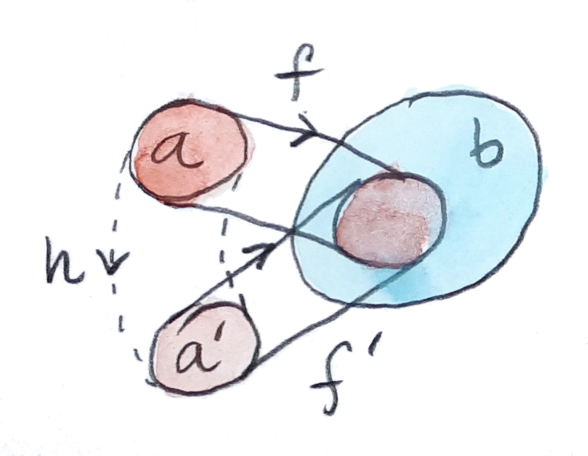
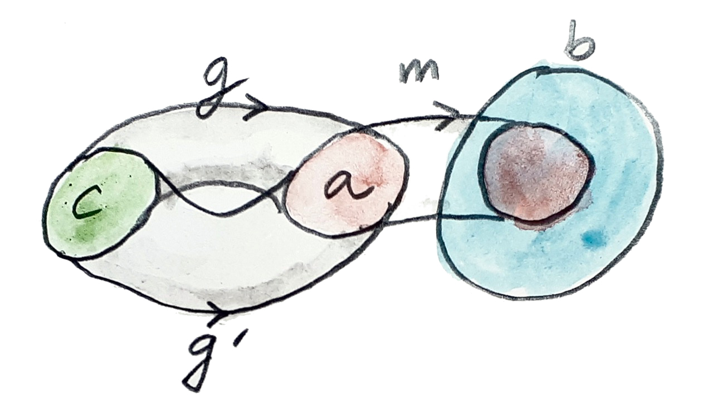
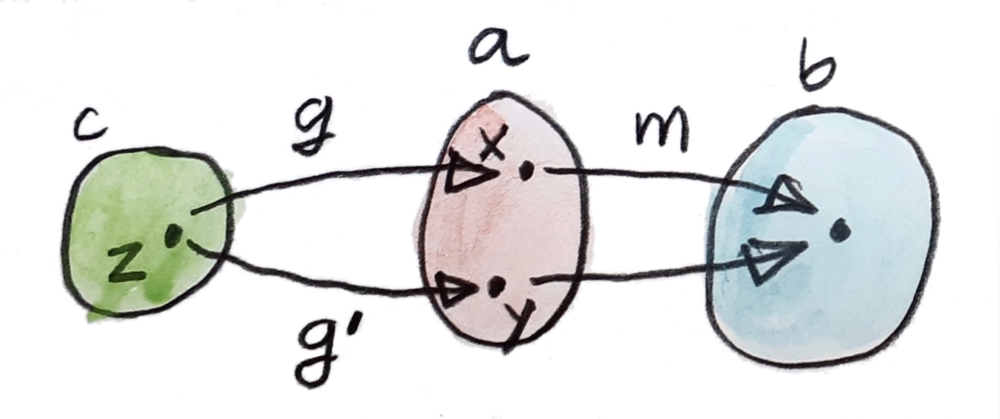
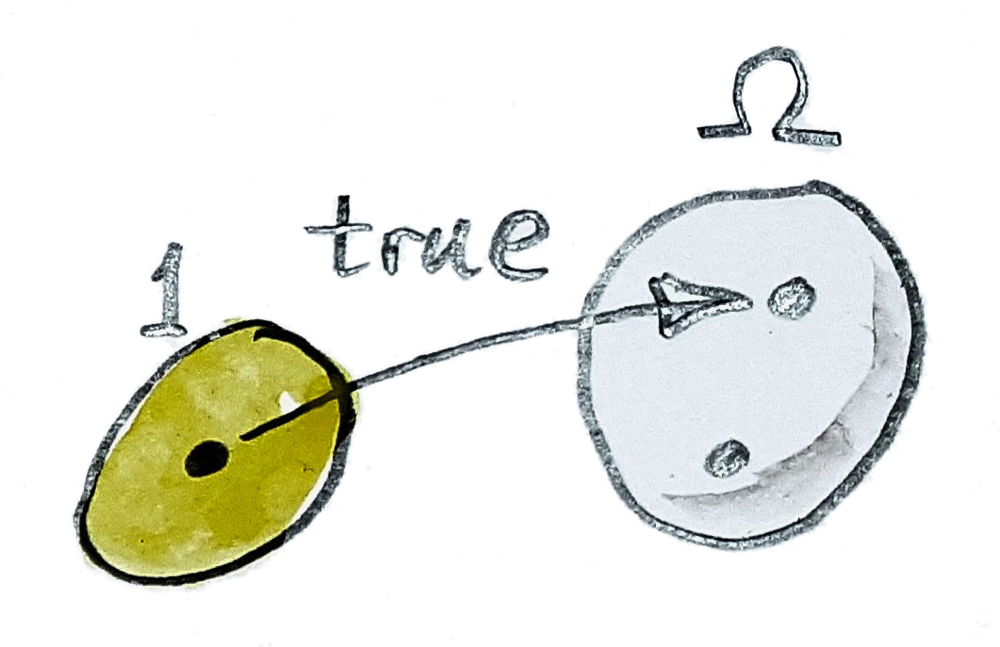
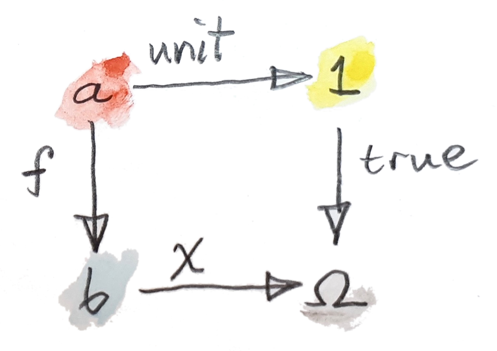

我意识到，我们可能正在离编程越来越远，扎进硬核数学。但谁也不知道下一次编程大革命会带来什么，又需要哪种数学才能理解它。现在就有一些非常有趣的想法在流传，例如拥有连续时间的函数式响应式编程、用依赖类型扩展 Haskell 类型系统，以及探索同伦类型论在编程中的应用。
到目前为止，我一直很随意地把类型等同于值的集合。严格说这并不正确，因为这种方法没有考虑到：在编程中我们需要计算值，而计算是需要时间的过程，极端情况下甚至可能永不终止。发散计算（divergent computation）是每一种图灵完备语言的一部分。
从基础层面看，集合论也可能并不是计算机科学、甚至数学本身最合适的基础。一个很好的类比是：集合论就像绑定到某种特定体系结构的汇编语言。如果想让数学运行在不同体系结构上，就必须使用更一般的工具。
一种可能是用空间替代集合。空间带有更多结构，而且可以不依赖集合来定义。通常与空间相联系的一样东西是拓扑，它是定义连续性之类概念所必需的。而传统拓扑方法——你猜对了——是通过集合论建立的，特别是子集概念在拓扑中处于核心位置。不出所料，范畴论学者把这个概念推广到了 Set 以外的范畴。拥有恰到好处的性质、可以替代集合论的那类范畴称为 Topos（复数：Topoi）；它提供的内容之一，就是广义的子集概念。
子对象分类器
先尝试用函数而非元素表达子集。任意从集合 a 到 b 的函数 f 都会定义 b 的一个子集——a 在 f 下的像。但定义同一个子集的函数有很多，需要更精确一些。首先聚焦于单射函数，也就是不会把多个元素挤成一个的函数。单射把一个集合“注入”另一个集合。对有限集合，可以把单射想象成连接两个集合元素的一组平行箭头。第一个集合当然不能比第二个大，否则箭头必然汇聚。这里仍有一点歧义：可能还有另一个集合 a′ 和另一个从它到 b 的单射 f′，选出了同一个子集。但很容易相信，这样的集合必然与 a 同构。利用这一事实，可以把子集定义成一族定义域通过同构相关的单射。更准确地说，两个单射：
f′:a′→b
在存在同构：
并满足：
时等价。这样一族等价的注入定义 b 的一个子集。

把单射函数换成单态射（monomorphism），这个定义就能提升到任意范畴。提醒一下，从 a 到 b 的单态射 m 由泛性质定义：对任意对象 c 与任意一对态射：
g′:c→a
只要：
就必有 g=g′。

在集合上，如果考虑函数 m 不是单态射意味着什么，这一定义会更容易理解：它会把 a 的两个不同元素映射到 b 的同一个元素。于是可以找到两个只在那两个元素处不同的函数 g 与 g′；与 m 后复合会掩盖这种差异。

定义子集还有另一种办法：使用一个称为特征函数（characteristic function）的函数。它是从集合 b 到双元素集合 Ω 的函数 χ。这个集合中的一个元素被指定为“真”，另一个为“假”。χ 把属于子集的 b 中元素指派为“真”，把不属于子集的元素指派为“假”。
还需说明把 Ω 的一个元素指定为“真”是什么意思。可以用标准技巧：使用从单元素集合到 Ω 的函数，称之为 true：

可以把这些定义组合起来，不仅定义什么是子对象，还能在不谈元素的情况下定义特殊对象 Ω。思想是让态射 true 表示一个“泛型”子对象。在 Set 中，它从双元素集合 Ω 中选出单元素子集。这已经尽可能泛化：它显然是真子集，因为 Ω 还有一个不在该子集中的元素。
在更一般的情形中，把 true 定义为从终对象到分类对象（classifying object） Ω 的单态射。子对象分类器（subobject classifier）由 Ω 与 true 一起组成。但仍需定义分类对象，即找到把这个对象与特征函数联系起来的泛性质。事实证明，在 Set 中，沿特征函数 χ 对 true 取拉回，会同时定义子集 a 与把它嵌入 b 的单射。拉回图如下：

分析这个图。拉回等式是：
函数 true∘unit 把 a 的每个元素映射为“真”。因此，f 必须把 a 的所有元素映射到 b 中那些 χ 为“真”的元素。按定义，它们就是特征函数 χ 所指定子集的元素。f 的像确实正是所讨论的子集。拉回的泛性保证 f 是单射。
这个拉回图可以用来在 Set 以外的范畴中定义分类对象。这种范畴必须有终对象，让我们能定义单态射 true；还必须有拉回——实际要求是拥有所有有限极限（拉回是有限极限的一个例子）。在这些假设下，用如下性质定义分类对象 Ω：对每个单态射 f，都存在唯一态射 χ 补全这个拉回图。
来分析最后一句。构造拉回时，给定三个对象 Ω、b 与 1，以及两个态射 true 与 χ。拉回存在意味着能找到最好的对象 a，并配上两个使图交换的态射 f 与 unit（后者由终对象定义唯一确定）。
而这里求解的是另一组方程：让 a 与 b 都变化，求 Ω 与 true。对给定 a 与 b，可能存在、也可能不存在单态射 f:a→b。但如果存在，我们希望它是某个 χ 的拉回；而且希望这个 χ 由 f 唯一确定。
不能说单态射 f 与特征函数 χ 一一对应，因为拉回只在同构意义下唯一。但请记得之前把子集定义为一族等价注入。可以把它推广为：b 的子对象是一族到 b 的等价单态射。这族单态射与该图的一族等价拉回一一对应。
于是，可以把 b 的子对象集合 Sub(b) 定义成一族单态射，并看出它同构于从 b 到 Ω 的态射集合：
这恰好是两个函子的自然同构。换言之，Sub(-) 是一个可表的逆变函子，其表示对象是 Ω。
Topos
Topos 是满足以下条件的范畴：
- 它是笛卡尔闭的：拥有所有积、终对象与指数（定义为积的右伴随）；
- 拥有所有有限图的极限；
- 拥有子对象分类器 Ω。
这组性质使 Topos 在大多数应用中都非常适合替代 Set。它还拥有一些由定义推导出的额外性质。例如，Topos 拥有所有有限余极限，包括始对象。
很容易想把子对象分类器定义为终对象的两个副本的余积（和）——它在 Set 中就是这样——但我们希望更一般。满足这一性质的 Topos 称为布尔 Topos（Boolean topos）。
Topoi 与逻辑
在集合论中，特征函数可以解释成定义集合元素的一项性质——一个对部分元素为真、其余元素为假的谓词（predicate）。谓词 isEven 从自然数集合中选出偶数子集。在 Topos 中，可以把谓词的观念推广为从对象 a 到 Ω 的态射。因此，Ω 有时称为真值对象（truth object）。
谓词是逻辑的构件。Topos 包含研究逻辑所需的全部工具：积对应逻辑合取（逻辑“与”），余积对应析取（逻辑“或”），指数对应蕴涵。除排中律（或者等价的双重否定消去）外，所有标准逻辑公理都在 Topos 中成立。因此，Topos 的逻辑对应构造性逻辑或直觉主义逻辑（intuitionistic logic）。
直觉主义逻辑一直在稳步获得地位，并从计算机科学那里得到了意想不到的支持。经典排中律建立在绝对真理的信念上：任意命题非真即假，或者像古罗马人会说的，tertium non datur（不存在第三种选择）。但我们知道某件事为真或为假的唯一办法，是证明或反驳它。证明是一个过程、一项计算——而计算需要时间与资源。有时它们可能永不终止。如果无法在有限时间内证明一个命题，声称它为真就没有意义。拥有更细腻真值对象的 Topos，为建模有趣的逻辑提供了更一般的框架。
习题
- 证明：沿特征函数对 true 取拉回所得的函数 f 必须是单射。
点击展开参考答案
更一般地，单态射的拉回仍是单态射。设 g,h:x→a 且 f∘g=f∘h。到终对象的态射唯一，所以 unit∘g=unit∘h。因此 g 与 h 给出了到拉回图两条边完全相同的两个锥。由拉回的唯一性，g=h，故 f 是单态射；在 Set 中单态射正是单射。
按元素看也很直接：若 f(x)=f(y)，那么二者在 b 中是同一个 χ 取真值的元素。拉回 a 只为每个这样的元素保留唯一原像，所以 x=y。